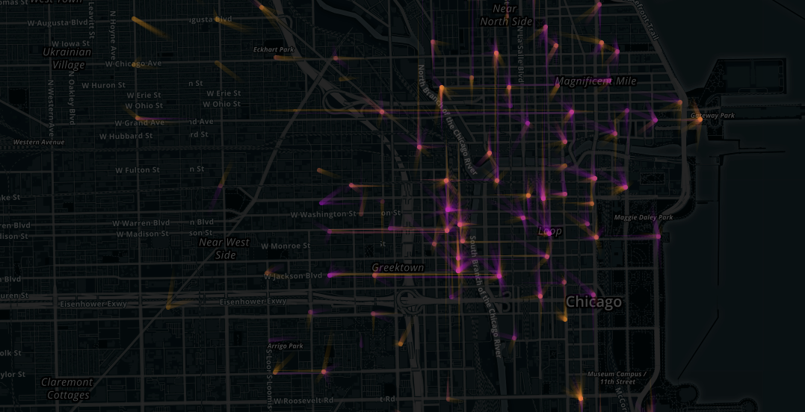

Origin-Destination (O-D) matrices are prevalent data structure in the field of transportation analysis. They provide information on how many people move between fixed set of locations e.g. between metro stations, bus stops or airports in a certain time interval. They also represent the network where the nodes are formed by the locations and edges by the people flows between them. Visualizing this kind of data is challenging but potentially very beneficial. Understanding how people move across transportation network can result in the optimization of many important properties of the network e.g. cost reduction or travel time reduction. Understanding is also crucial for performing tasks such as fleet rebalancing and scheduling or spotting bottlenecks.
There are several excellent visualization types well suited for that task e.g. chord diagram or Circos but due to the spatial dimension of the data we often expect a map representation to be used. In that case we could visualize the matrix as a graph where the nodes have fixed position defined by their geographical coordinates. We can choose to represent the flows of the people between the nodes using straight lines, which would form a node-link diagram, but in that case the picture quickly becomes cluttered and unreadable as the number of connections or nodes grows - see picture below, left side. We could play with opacity to expose the main patterns or use techniques like edge bundling that try to represent the edges of the graph not as straight lines but as curved lines in order to reduce visual clutter and make global trends and pattern more easily noticeable - see picture below, right side. This technique focuses however on exposing global network patterns and little can be said about particular nodes. In this article I will try to propose a variation of the node-link diagram that could be useful for certain use cases.
Applying above mentioned rules to the node-link diagram of the Chicago bicycle sharing network data set with the blue color for the origin and orange color for the destination can be seen on picture below. It shows the bicycle trips between 4PM and 5PM on Wednesday August 28th - same as two networks in the first picture of this article. As a result the overall network structure disappears but all the nodes and their incoming and outgoing connections are visible.
Each node is characterized by its own local pattern which can be effectively analyzed giving immediate insights on how the station operates. For example, whether there are more incoming or outgoing trips can be judged by looking at the color of the node. Analyzing one particular node we can see incoming trips in orange and outgoing trips in blue. Length of the lines represent how long the trips were. We can also observe directions of the outgoing and incoming trips.
Going back to the map below the whole bike sharing system can be analyzed. What we see is the afternoon view of the city with many people taking bicycles from the city center (blue nodes) and going back to the residential areas on the city outskirts (orange nodes). Tasks like spotting the outliers which could be stations operating small number of rides or identifying unbalanced stations i.e. those which operate mostly outgoing or mostly incoming rides can be performed quickly using this visual representation.

Presented variation of the node-link is by no means complete and can be further changed and modified according to particular user's needs. Future improvements could involve working on different than simple opacity color blending modes to better reflect directions in which incoming and outgoing flows are overlapping. Interactive version could be also developed to provide more information on demand e.g. when user hovers over the node full edge length could be displayed to provide even more context of the network as a whole.
Back to main page